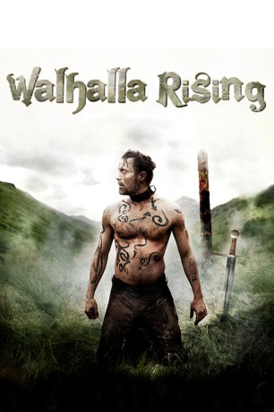

#7778 Walhalla Rising
 
 IMDB-Wertung: 6.0 / 10
IMDB-Wertung: 6.0 / 10  Metascore: 0
Metascore: 0 
Im Jahre 1000: Ein nordischer Unbekannter, genannt One-Eye, wird von Wikingern gefangengehalten und gezwungen, sich mit anderen Männern bis auf den Tod zu messen. Er ist unbesiegt, gefürchtet und stumm. In der Gefangenschaft kümmert sich ein Junge namens Are um ihn, der ihm Wasser und Nahrung bringt. Als er eines Tages überführt wird, überwindet er seine Fesseln und bezwingt seine Peiniger. One-Eye und Are begegnen einem Clan, der den Kreuzzügen in das Heilige Land folgen will, und schließen sich ihnen an. Eine Odyssee über das Meer entfaltet sich. Ein mystischer Nebel umgibt das Boot. Die Krieger sind auf einem Weg in das Herz der Finsternis.
Jahr: 2009
Dauer: 92 Minuten
FSK: 16
Land: Dänemark Studio: Sunfilm EntertainmentTonspuren:
Untertitel:
Auflösung: 1080p (1920x816) Größe: 5120 MB
Genre: Drama, Abenteuer, Fantasy
Regisseur: Nicolas Winding Refn
Drehbuch: Nicolas Winding Refn
Soundtrack: Peter Kyed, Peter Peter
Darsteller:
 Mads Mikkelsen als One Eye
Mads Mikkelsen als One Eye Alexander Morton als Barde - Pagan
Alexander Morton als Barde - Pagan- Maarten Stevenson als The Boy - Pagan
- Matthew Zajac als Malkolm - Pagan
 Gary Lewis als Kare - Christian Viking
Gary Lewis als Kare - Christian Viking Jamie Sives als Gorm - Christian Viking
Jamie Sives als Gorm - Christian Viking Ewan Stewart als Eirik - Christian Viking
Ewan Stewart als Eirik - Christian Viking Douglas Russell als Olaf - Christian Viking
Douglas Russell als Olaf - Christian Viking- Tashi Sangpo Murik als Indian
- Stewart Porter als Kenneth - Pagan
- Gordon Brown als Hagen - Christian Viking
- Gary McCormack als Hauk - Christian Viking
- Andrew Flanagan als Gudmond - Christian Viking
- James Ramsey als Gudmund - Christian Viking
- Rony Bridges als Magnus - Christian Viking
- Robert Harrison als Roger - Christian Viking
- Andy Nicolson als Christian Viking
- Garry Sweeney als Christian Viking
- Tashi Tsering als Indian
- Lhasam Gedun als Indian
- Palden Tsering als Indian
- Pasang Manor als Indian
- Wangdu Dorjee als Indian
- Dawa Norbu als Indian
- Lhabhum Sershi als Indian
- Tsultrim Gyatso als Indian
- Tsewang Phuntsok als Indian
- Tsering Dorjee als Indian
- Lobsang Griffiths-Golba als Indian
- Pasang Dorjee als Indian
- Tenzin Jigdal als Indian
- Phurbu Rinzin als Indian
- Lobsang Palden als Indian
- Jamyang Chophel als Indian
- Nagwang Kunchok als Indian
- Tashi Dhondup als Indian
- Nawang Anja-Tsang als Indian
- P.B. McBeath als Man with pike (uncredited)
- Callum Mitchell als Pagan Viking Guard (uncredited)
- Jules Wallace als Fighter (uncredited)
Datei: X:\2009(N-Z)\Walhalla Rising (2009, FSK16, 1920x816).mkv seit 15.12.2017
Festplatte: HD 2009(G-Z)-2010(A-F)
 Es gibt insgesamt 99 Filme in der Gruppe '2009(N-Z)'
Es gibt insgesamt 99 Filme in der Gruppe '2009(N-Z)'